Half a year, 6 cities, 3 half marathons, 3 full marathons. I always feel that this is a very magical thing, "That little fat boy can actually run a marathon, or a full marathon." I have been running for half a year, and I have really changed a lot. I am darker, stronger, and to a certain extent, I understand myself better.
FIELD NOTE 01
Preface
I was born fat and have been fat since childhood.
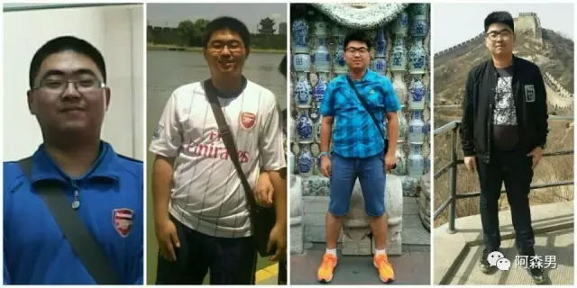
(From left to right they are 2011, 2012, 2015, 2016)
I was also a crazy football boy. Due to my heavy weight, my position was always hovering between midfielder and central defender. But I was also a fat man who could fly on the football field. Naturally, my highlight was that I often performed "flying on the grass" from the backcourt to the frontcourt on the court, and in a race, after knocking over n juniors, I scored in one line and finally scored a hat trick. Since then, I have had a well-known nickname "Iron Chariot".
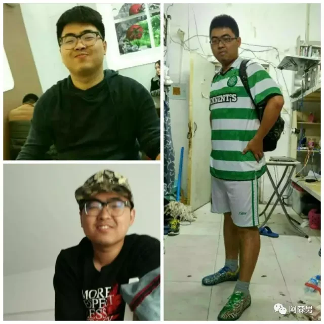
I never tire of it, so I don’t think being fat is a problem for me. Instead, I enjoy the pleasure of being on the court because my body is strong. My grandma also said that "being fat is a blessing", and others called me "the big fat boy from the old Zhang family", so losing weight was not really on my agenda, and my weight once peaked at about 214 pounds.
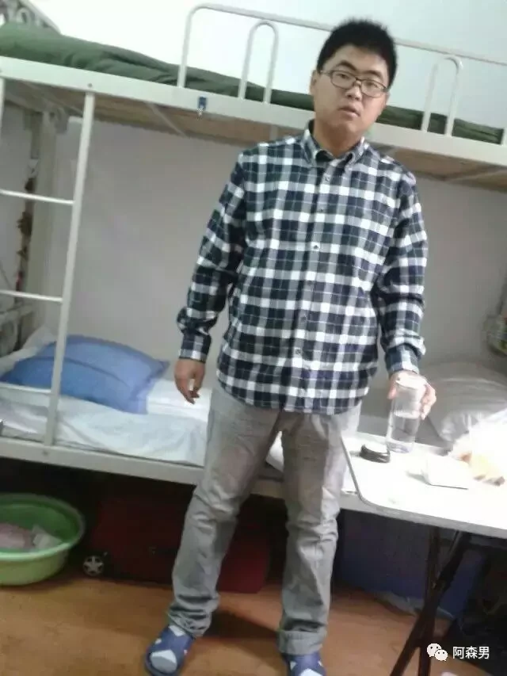
(Do you have a sense of déjà vu with a big-faced cat?)
123
On October 15, 2016, 123 couples of alumni held a grand collective wedding in Wuhan University’s “Bring Love Back to Jia” event. The senior brothers were handsome and the senior sisters were beautiful, and each of them looked heroic.
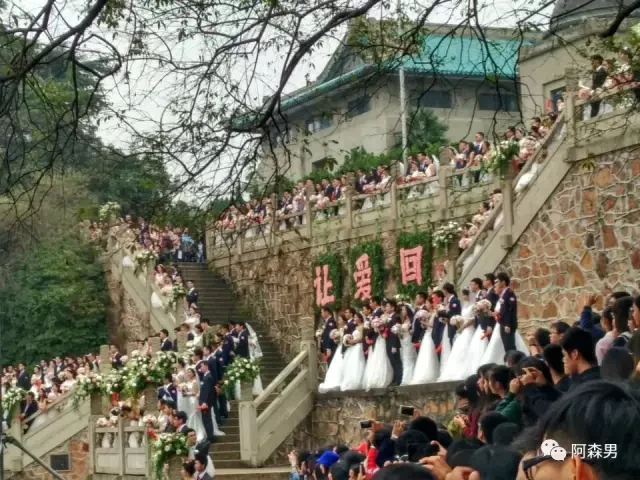
At that point, I was not only envious but also envious. Looking at myself again, I was so paunchy. How could I have the vitality of a young man? Thinking about how I will return to my alma mater after a few years, I can’t help but feel ashamed. Maybe sometimes the change happens in just a moment, and it’ll be fine if you figure it out.
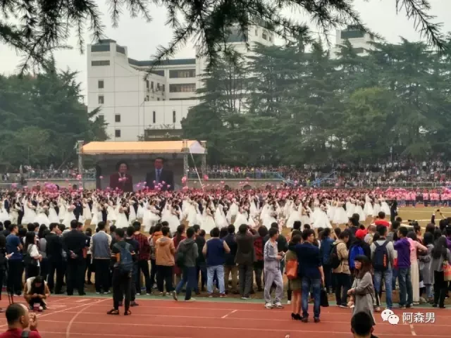
The next day, I followed my friend and applied for a fitness card. From then on, I formed a fitness group of four with Xiaopang, Jiji, and Tuotuo. We were in the gym no matter what the wind or rain. No matter how busy we were every day, we still had to take some time to exercise. In addition, I also gave up the habit of eating meat and drinking alcohol in Northeast China, and rationalized my diet.
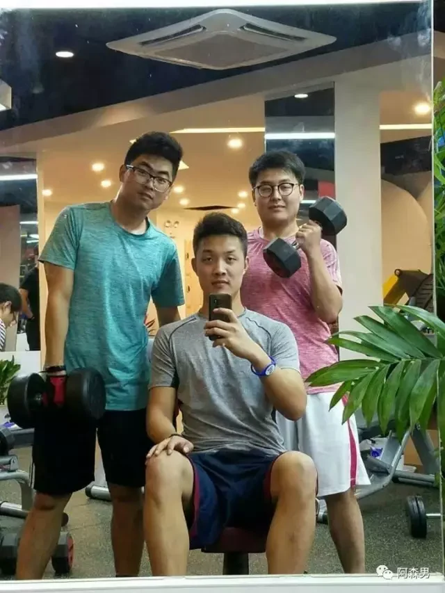
(Can you recognize which one is me?)
When treadmills and bicycles no longer satisfy me, I tried my first road run in mid-December, a 5-kilometer run on Luojia Mountain in Wuhan University. I put on headphones and walked alone on the mountain road. It seemed that I was the only one in the world. It was very comfortable. Since then, I have fallen in love with this feeling. On the winter solstice in 2016, the first 10 kilometers was reached. The timely appearance of the Wuhan Marathon also gave me a new goal. "Marathon" really entered my field of vision for the first time.
The fields of Yuan'an
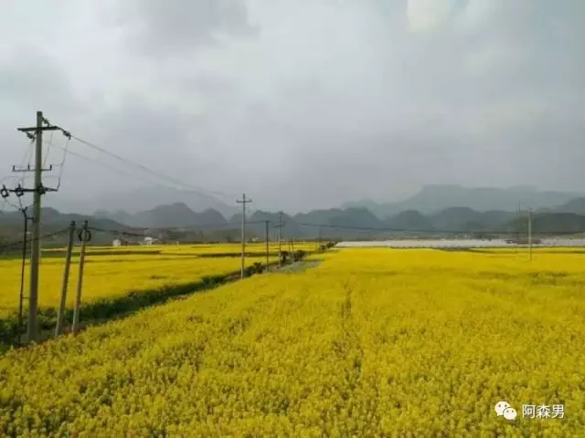
The Wuhan Marathon is on April 15, 2017. In order to prevent myself from falling behind, I signed up for the Yuan'an Half Marathon (March 9, 2017) as a warm-up. Yuan'an is very close to Wuhan and is famous for its beautiful rapeseed flowers. On the premise of working and studying during the day, I will run one or two laps of Luojia Mountain in the morning or at night, and occasionally run to East Lake on weekends. Wuhan University is really good, there are mountains and water, so you will not worry about having no place to run. East Lake is just outside the dormitory, and Luojia is just a few steps away.
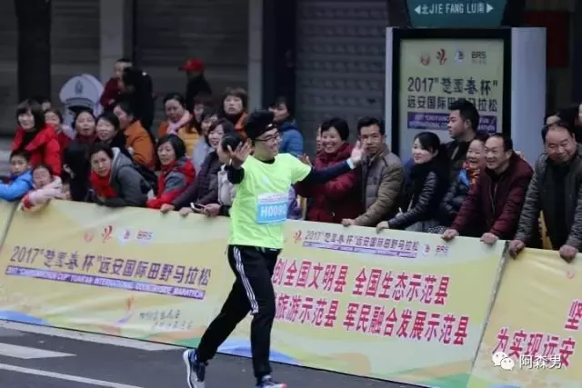
Marathons usually happen on weekends, so I arrived in Yuan'an the day before the race. It was my first one, and I was so excited I barely slept. Luckily, we still made it to the start on time. Bang—the gun went off, and suddenly I was moving with the crowd. Spectators lined the road, shouting encouragement. For some reason, my eyes got a little wet. Along the course, grandpas and aunties sat on small stools and handed out food and drinks. Rapeseed flowers stretched out on both sides of the road, and every so often we passed an elementary school where kids in uniforms reached out for high-fives. Whenever I felt tired, slapping those little hands instantly brought me back to life. My palms ended up red and numb, but I was ridiculously happy. That was when I realized football wasn't the only sport that could pull me in like this. Yuan'an was hosting its first marathon, and sure, it was inexperienced, under-equipped, and a little rough around the edges—but the result was more than good enough.
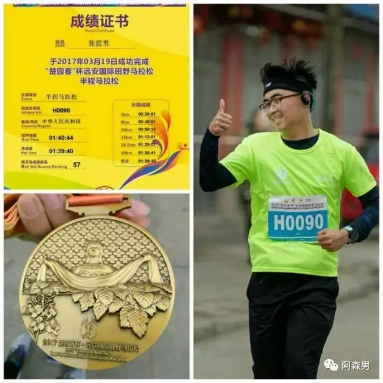
Heavy rain in Wuhan
A month later, the Wuhan Marathon arrived as scheduled. The theme of the Wuhan Marathon was "Festival in the City" and its reputation was surprisingly good across the country. Even though it rained heavily on the day of the marathon, it did not dampen the enthusiasm of the people in Jiangcheng. They started from Jianghan Road and passed through the buildings of the Republic of China in Wuhan. They crossed the Yangtze River Bridge and the Yellow Crane Tower. On the bank of the Yangtze River, the river breeze accompanied the heavy rain. The wind made people feel a bit chilly, but seeing the volunteers bringing supplies in the rain and shouting to come on, the fatigue disappeared instantly. It rained heavily in Jiangcheng, but the citizens were so enthusiastic. It was hard to imagine what it would be like without rain. The half marathon ended at the edge of Shahu Lake, and it was a small pity that it did not pass through the Screaming Track and East Lake Greenway in the Lingbo Gate section of Wuhan University. But the medals are very nice and the results are good. The city’s festival is also my festival. I love Han Marathon very much.
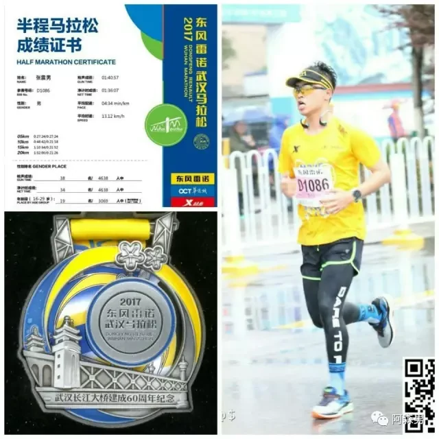
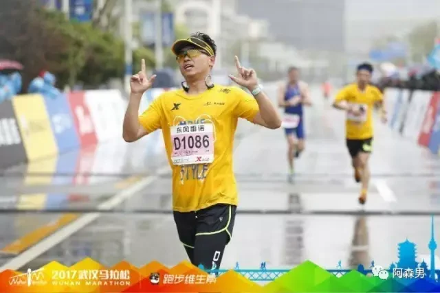
Hefei's birthday
I originally wanted to finish the Han Marathon, but that was enough, but suddenly I saw that Sunday, May 14, 2017, Mother’s Day, was my birthday and the Hefei Dawu Half Marathon was a very meaningful day. As a result, my hand slipped and I couldn’t help myself, so I signed up. It took 2 hours to drive to Hefei. The competition was in the suburbs of Hefei, but the organizing committee was pretty good. The bus took us from the city to the competition site for free. The weather was not very hot, and there were many shady places. There were not many spectators along the way. I followed an uncle all the way to the finish line and almost entered 130. It was a small competition, but it was the best birthday gift for myself. I also gave my mother a beautiful medal on Mother's Day. It was a very meaningful day.
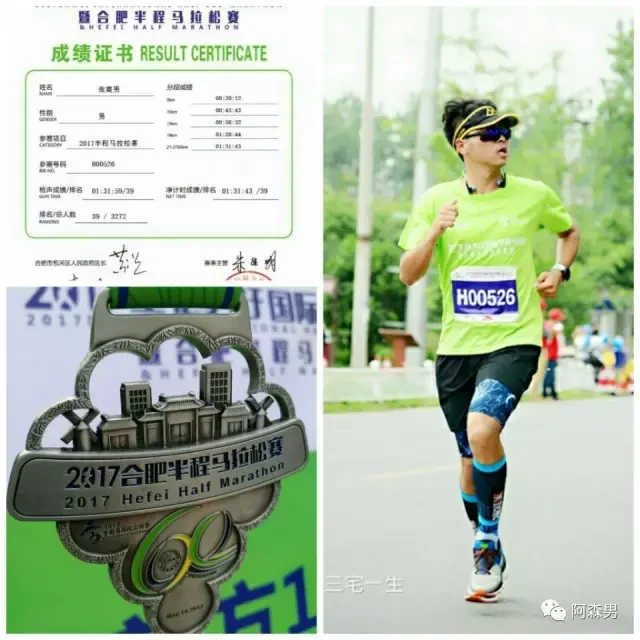
Since then, I have done 3 half marathons in 3 months, each time in PB. Maybe I can try a full marathon? There was always this thought in my mind, but I decided not to run away yet and call a truce.
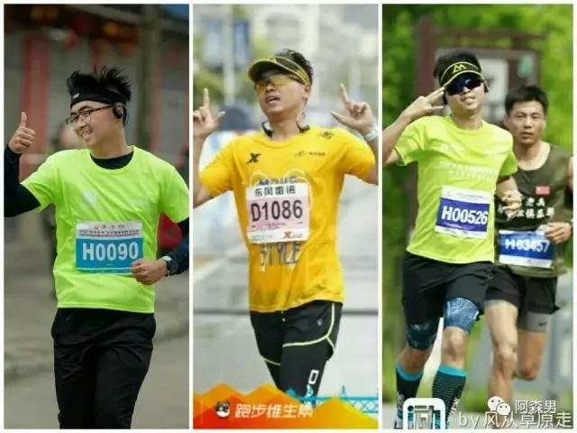
(After running three half-marathons, I accidentally discovered that three gestures can exactly form 1, 2, and 3, which also adds a sense of ritual to running.)
The scorching sun of Changzhi
There was no marathon running for two months, and in July, the country entered a sizzling mode, and summer vacations began all over the country. But for graduate students... I originally wanted to go to Liupanshui, but it was too far. Finally, I chose a weekend to dedicate my first full marathon to Changzhi. I thought that since Shanxi is in the north, it will naturally not be too hot, and it is located in the sub-plateau, so it must be very cool. It turned out that I was wrong. The air in Changzhi was very heavy and stuffy, the sun was strong, and the track was very straight. After 21 kilometers, there was no obstruction, and I had to face the sun directly. There were many spectators in the second half of the race, and the steep uphill stretch that stretched for several kilometers made me hit the wall. I walked and ran to the finish line. However, the volunteers in Changzhi are really good. There will be volunteers at every kilometer sign to cheer you on. The audience was also very enthusiastic in the first half of the race. It was my first marathon and the organizing committee was full of opportunities. There were no free photos after the race, and the paid photos were all at a robbery price, so I took a few watermarked photos. The sun was like fire, and I was very excited.
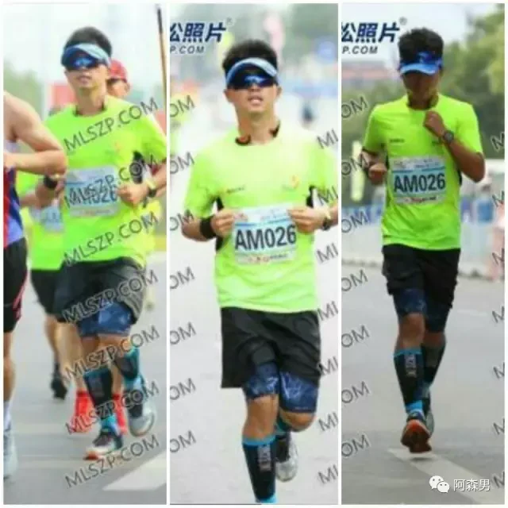
(Arranged by starting time from left to right, the color of the whole person changes at the end.)
The results were average. This time I really experienced the power of the marathon and experienced the famous "hitting the wall" in the circle. But maybe this is the charm of the marathon. I was tired but happy.
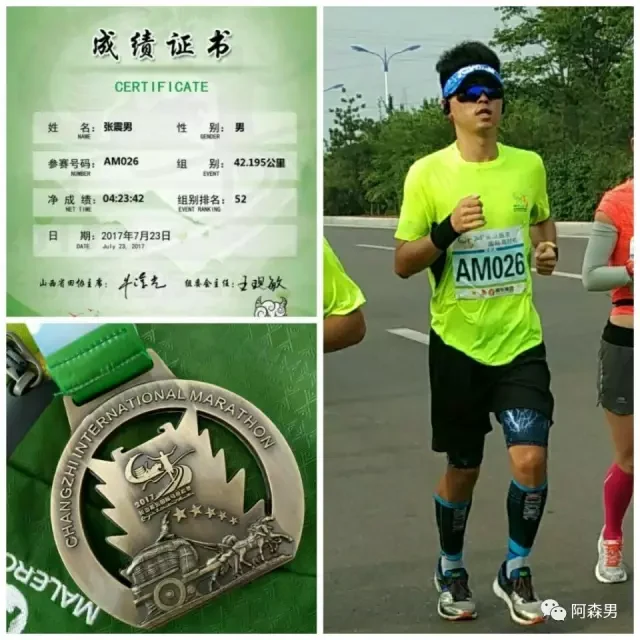
Ordos night
A month later, while my teacher was taking me to Beijing for a meeting, I applied for a 2-week vacation. After the meeting, I took a hard seat all the way from Beijing to Ordos, starting a crazy double marathon in a week. Children in the north have wanted to see the desert and prairie since they were young, and they use marathon running as a reason to give themselves a chance to fulfill this small wish. The sky in Inner Mongolia is the most beautiful I have ever seen, but there are too many fireworks in the desert. It is said that the grassland is not vast, so I simply missed it.
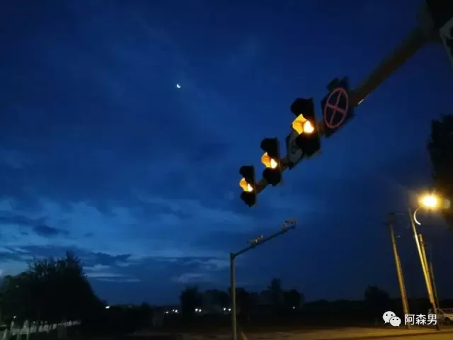
Ema is a rare night running event in China. It starts at 5 pm and continues from dusk to sunset. Finally, the lights come on. The night view of Kangbashi is beautiful, and the singing, dancing and fountains of Ulan Mulun Lake are also very unique.
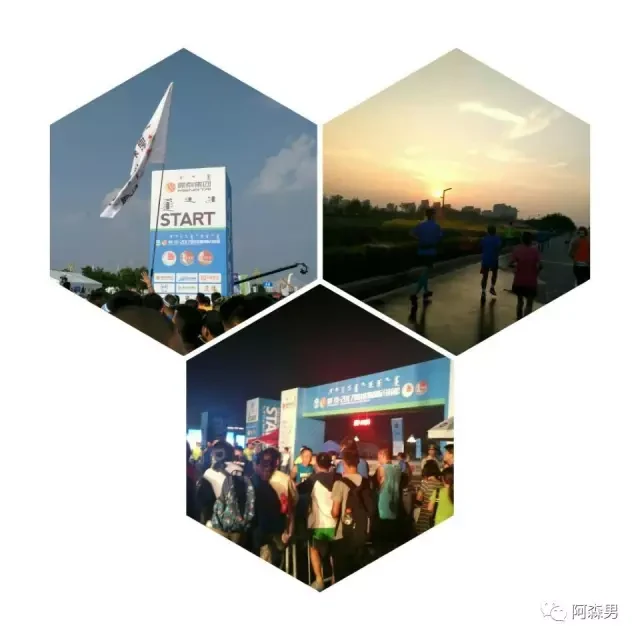
However, it was not easy to run the whole distance. The altitude of more than 1,300 meters was very strenuous. There were many ups and downs in the second half of the journey. At 28 kilometers, I started to lose my breath and then hit the wall. Thinking of going home to run the Harbin Marathon in a week, I started walking. Anyone who runs knows how difficult it is to start running again after walking. In this way, I walked and ran, taking a break every time I reached a supply point. At 39 kilometers, a big brother on the roadside shouted, "There are still 3 kilometers to go, eat watermelon at the end." This aroused my desire to continue running, and I passed the finish line in nearly 4 and a half hours. The watermelon and sour plum soup after the race was really awesome.
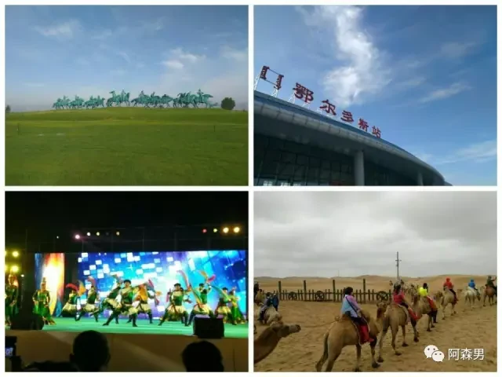
There is no grassland during the trip to the grassland, but there is starry sky, desert, Mongolian ethnic customs, and the Ordos Marathon, which is still full of charm.
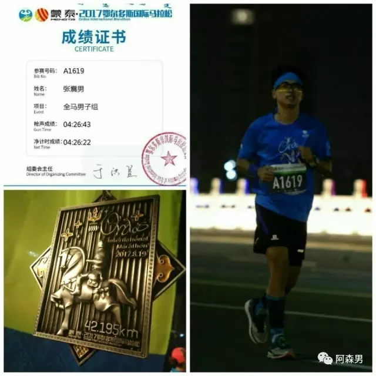
Food in Harbin
"Don't let people run properly." This is a popular joke recently after running the Harbin Marathon. The Harbin Marathon is not a marathon, it is just a 42-kilometer buffet. No wonder a Taiwanese uncle would also say, "The Harbin Marathon is the best marathon he has ever run."
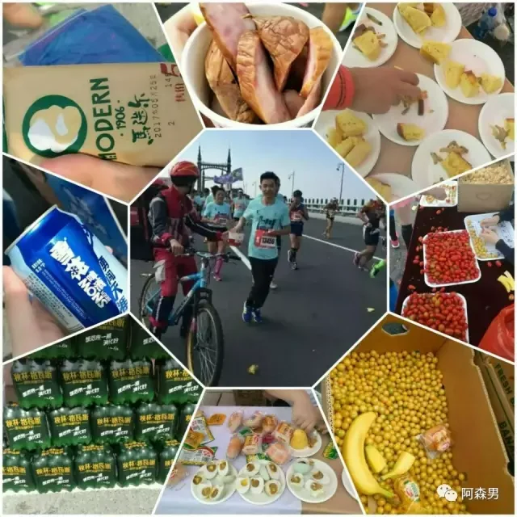
As a Harbin native, I feel very happy. Indeed, Harbin Marathon is one of the best experiences I have ever run in a race. The predecessor of the Harbin Marathon was the Harbin Half Marathon two years ago. I really wanted to run it at that time, but I didn’t have the courage to participate because I was too fat at the time.
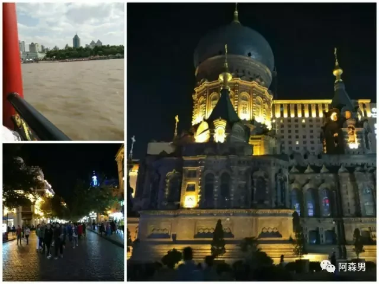
Two years later, I not only wanted to run, but also ran a full marathon, so I was really happy when I found out that I had won the lottery. In Harbin at the end of August, the weather is 20℃, with gentle breeze and white clouds in the sky, which is very suitable for running. There are not many slopes in Harbin Marathon, so it is also suitable for PB. 3 kilometers after the start, I was very lucky to meet my old school friend Frog. He is an experienced driver. I followed his pace for the first 30 kilometers, eating and drinking. The atmosphere in Harbin Marathon is really great. There are bands of all sizes, hot Russian beauty cheerleaders, enthusiastic cheering citizens, big DJs who cheer for the players, heroic policewomen who maintain order, square dancing ladies in costumes and many cute children.
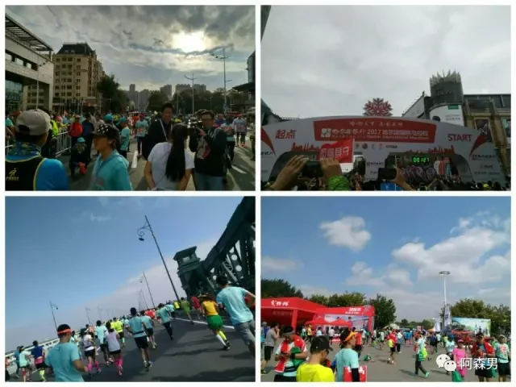
I was a little drifting and interacted with them all the way. Frog told me not to be too excited. Sure enough, I couldn't keep up with Frog in the second half of the race. Maybe it was the fatigue from a week of double marathons, or maybe it was too much fun in the first half. In short, Frog dumped me at 30 kilometers. After 30 kilometers, it can truly be called the second half of the marathon. At this time, I can only rely on myself. I set a goal for myself. I can't stop or walk. No matter how slow the pace is, I have to run. From 30 kilometers to 42 kilometers, I counted and hit the wall 4 times. Every time I wanted to stop and walk, I gritted my teeth and persevered. In fact, people who often run marathons will tell you that if you hit the wall, running mechanically is better for your body than walking. These 12 kilometers are the essence of the whole marathon, breaking through the limit of hitting the wall again and again., it was like coming back to life again and again. The kvass with 2 kilometers left was really delicious and gave me the strength to rush forward. It was the first time that I actually ran the whole marathon. Although the results were average, the test of breaking through and hitting the wall again and again was my biggest gain throughout the summer.
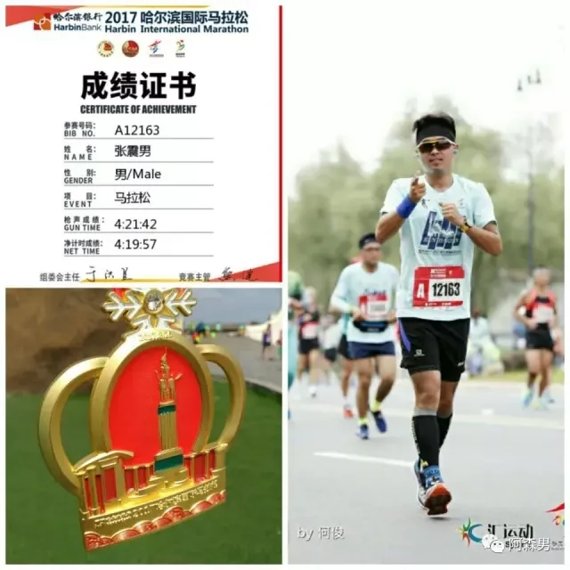
My parents were also cheering me on at the finish line. At that moment, I felt like a proud son.
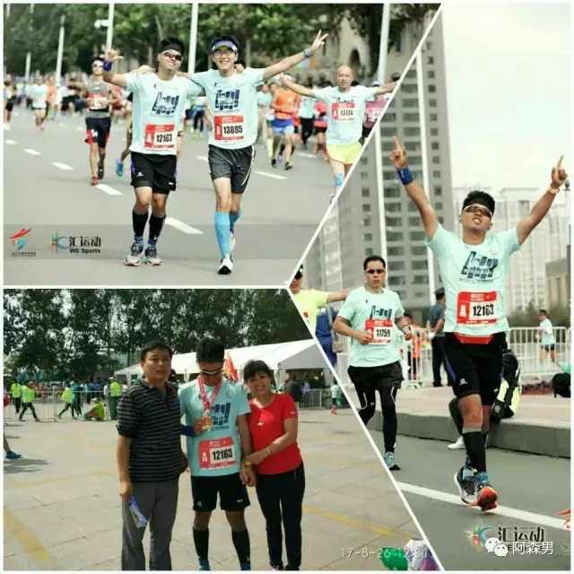
The craziness of the entire half year was fixed at the finish line of Harbin Marathon on August 26, 2017. There is a lot I want to say about running and marathon. After half a year of baptism, I understand that the marathon I understand is not only the pleasure of running on the field, but actually a kind of "marathon spirit", which represents "transcendence" and "persistence". I have a "cautious and independent" temperament, and the meaning of marathon running should be outside the race, not just on the 42-kilometer track. For me, half a year of madness is enough. In the future, I will participate in marathon activities more prudently. How to feed back the marathon spirit into life should be the true meaning of this sport and the focus of my life at this stage. For me, I have not yet accomplished anything. The study, scientific research, work, and life I face require me to invest more enthusiasm. As a participant who has experienced the baptism of marathon, I am also confident to do them well. Fortunately, I caught up with the Chinese marathon craze that has gradually emerged in recent years, which allowed me to return from about 214 pounds at my heaviest down to about 148 pounds. It also changed the appearance of my former steel chariot for the future. I want to say that there are more paths for runners, and this path will appear more often in the competition of life.
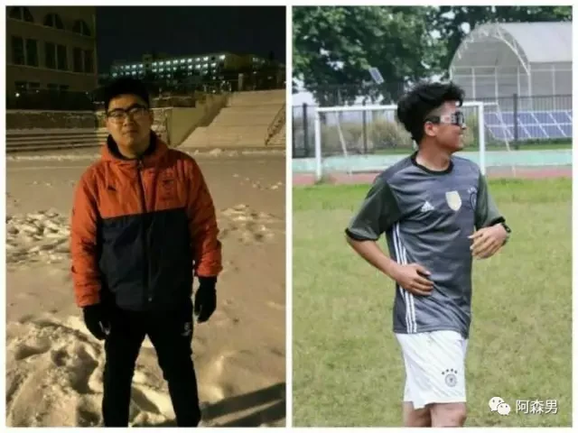
- End -
Words · Arsenan
Photos · Arsenan
Design · Arsenan